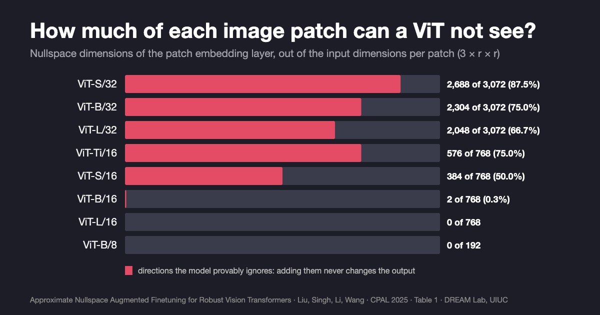
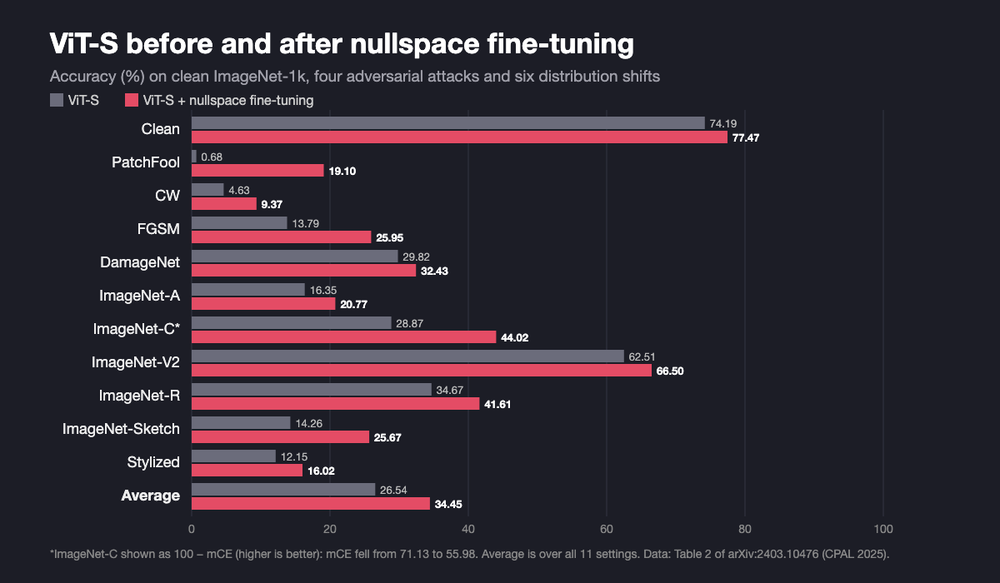

Vision Transformer Robustness: The Inputs a ViT Cannot See
Many vision transformers are exactly blind to most directions of change in each image patch. We turned that blind spot into a way to make them more robust.
By Haoyang Liu and Haohan Wang · · About our CPAL 2025 paper (oral)
Vision transformers (ViTs) have been the default backbone in computer vision for about five years, yet vision transformer robustness is still unsettled: the same model can be accurate on clean images and fail badly on sketches or under adversarial attack. Our paper Approximate Nullspace Augmented Finetuning for Robust Vision Transformers, by Haoyang Liu, Aditya Singh, Yijiang Li and Haohan Wang (University of Illinois Urbana-Champaign, Sorted Technologies, UC San Diego), an oral at the Conference on Parsimony and Learning (CPAL 2025), looks at this from an unusual angle. Instead of asking which input changes break a ViT, it asks which changes a ViT cannot see at all. The answer is surprisingly many, and that blind spot turns out to be a useful handle for making ViTs more robust.
Key findings
- Because a ViT's patch embedding layer is linear, any patch with more pixel values than embedding dimensions has a nullspace: in the CPAL 2025 paper by Liu, Singh, Li and Wang, ViT-S/32 cannot see 2,688 of the 3,072 input dimensions of each 32×32 patch, and adding noise from that space never changes its output.
- The nullspace is uneven across standard ViTs: 2,304 of 3,072 dimensions per patch for ViT-B/32 and 576 of 768 for ViT-Ti/16, but only 2 of 768 for ViT-B/16 and none for ViT-L/16 or ViT-B/8, according to Table 1 of the CPAL 2025 nullspace paper.
- Fine-tuning ViT-S with synthesized “approximate nullspace” noise raised its average score over clean, four adversarial and six distribution-shift tests from 26.54 to 34.45, including ImageNet-Sketch accuracy from 14.26% to 25.67% and PatchFool accuracy from 0.68% to 19.10% (CPAL 2025, Table 2).
- The fine-tuning used about 10% of the ImageNet-1k training data, and on ViT-S nullspace noise beat random noise of the same strength on seven of eight robustness tests, for example 25.67% vs 14.77% on ImageNet-Sketch; random noise was slightly better only on ImageNet-C.
Are vision transformers robust?
Only partly, and it depends on the kind of change. Earlier studies, such as Gu et al. (2021), found ViTs tolerate some natural corruptions better than convolutional networks, while attacks such as Patch-Fool (Fu et al., ICLR 2022) showed they are not reliably robust to adversarial perturbations. The baseline numbers in our paper make the gap concrete. An off-the-shelf ViT-S reached 74.19% on clean ImageNet-1k, but 14.26% on ImageNet-Sketch, 12.15% on Stylized-ImageNet, and 0.68% under the PatchFool attack.
The usual fixes work from the outside. Adversarial training finds worst-case perturbations and trains on them, which tends to cost clean accuracy. Data augmentation (flips, MixUp, CutMix, AugMix) uses transformations that people choose by hand, and on its own does little against adversarial attacks. The paper asks a different question: is robustness a property of the model itself, and can we find perturbations the model is already invariant to and enlarge that set?
Key terms
- Nullspace
- For a linear map, the set of input vectors it sends to zero; adding any of them to an input leaves the output unchanged.
- Patch embedding layer
- The first layer of a ViT, a linear projection that turns each non-overlapping image patch of 3×r×r pixel values into one token of d dimensions.
- Rank-nullity theorem
- The linear algebra fact that guarantees a non-trivial nullspace whenever a linear map's input dimension (here 3r²) exceeds its output dimension (here d).
- Approximate (ε-approximate) nullspace
- For the nonlinear transformer encoder, the set of additive noise vectors that change the model's output probabilities by at most a small amount ε on average over the data.
- Nullspace noise augmented fine-tuning (NS)
- The paper's method: fine-tune a pretrained ViT on inputs with synthesized approximate nullspace noise added, so the set of noise the model tolerates grows.
- Distribution shift
- A difference between training and test data, here measured with ImageNet-A, -C, -V2, -R, ImageNet-Sketch and Stylized-ImageNet.
Do vision transformers have a nullspace?
Many do, for a simple reason. A ViT first cuts the image into non-overlapping r×r patches and projects each one, with 3r² pixel values, to a d-dimensional embedding using a linear layer. By the rank-nullity theorem, if 3r² is larger than d, some directions in pixel space map to zero. Add any combination of them to an image and the patch embeddings are identical, so every later layer, and the final prediction, is identical too. This is exact, not approximate.

| Model | Patch size | Input values per patch | Embedding dim. | Nullspace dim. |
|---|---|---|---|---|
| ViT-Tiny | 16×16 | 768 | 192 | 576 |
| ViT-Small | 32×32 | 3,072 | 384 | 2,688 |
| ViT-Small | 16×16 | 768 | 384 | 384 |
| ViT-Base | 32×32 | 3,072 | 768 | 2,304 |
| ViT-Base | 16×16 | 768 | 768 | 2 |
| ViT-Base | 8×8 | 192 | 768 | 0 |
| ViT-Large | 32×32 | 3,072 | 1,024 | 2,048 |
| ViT-Large | 16×16 | 768 | 1,024 | 0 |
Patch size, embedding and nullspace dimensions are from the paper's Table 1; input values per patch are 3×r×r for RGB images. The paper shows two side effects of this blind spot in its appendix. A visible logo can be stamped onto an image using only nullspace directions, and the model's prediction does not change (the paper reports a 100% prediction match and a 10-4 confidence difference in its example). And an image can be pushed to look like a different image to a person while the model, and even its saliency maps, still respond as if it were the original.
The paper then goes past the first layer. Self-attention is nonlinear, so a true nullspace is not defined for the encoder. The authors prove sufficient conditions on the query, key and value matrices under which a non-zero perturbation leaves every attention head unchanged, and then search numerically for noise vectors that barely change the output. On ImageNette (a 10-class ImageNet subset), such learned noise left predictions almost unchanged, while the same noise with its elements randomly shuffled degraded predictions significantly. The model is tolerant to some directions and not to others.
How can you improve vision transformer robustness with fine-tuning?
If tolerance to approximate nullspace noise is tied to robustness, enlarging that tolerance should help. That is the method:
- Find a noise vector the model barely notices. Start from large random noise added to the patch embeddings (the encoder's input) and shrink it by gradient descent until the model's output probabilities change by less than ε = 0.03 on average. The result sits near the edge of the model's approximate nullspace.
- Fine-tune on that noise. Train the model for 40 steps on both clean inputs and inputs with the noise added, with the usual cross-entropy loss.
- Repeat. The paper runs 20 rounds. As fine-tuning proceeds, the noise found in step 1 gets larger while still staying within ε, which the authors read as the approximate nullspace growing, and robustness scores rise with it.
No new architecture and no hand-picked augmentations are needed. The whole run used about 10% of the ImageNet-1k training data. Most of the compute goes into finding the noise, and one run cost roughly as much as 8 epochs of standard ImageNet-1k training.
How much does nullspace fine-tuning help ViT robustness?

The table shows selected rows of the paper's Table 2. Accuracy in %, except ImageNet-C, which is mean corruption error (mCE, lower is better). The average is over all 11 settings, using 100−mCE for ImageNet-C.
| Model | Clean | PatchFool | FGSM | ImageNet-A | ImageNet-C ↓ | ImageNet-R | ImageNet-Sketch | Average |
|---|---|---|---|---|---|---|---|---|
| ViT-S | 74.19 | 0.68 | 13.79 | 16.35 | 71.13 | 34.67 | 14.26 | 26.54 |
| ViT-S + NS | 77.47 | 19.10 | 25.95 | 20.77 | 55.98 | 41.61 | 25.67 | 34.45 |
| ViT-B | 77.68 | 15.92 | 25.65 | 23.88 | 62.16 | 41.63 | 16.31 | 34.01 |
| ViT-B + NS | 81.42 | 23.52 | 36.50 | 24.55 | 47.82 | 44.85 | 26.35 | 39.39 |
| ViT-B + DAT | 81.47 | 22.64 | 48.80 | 23.83 | 45.95 | 48.68 | 36.94 | 43.41 |
| ViT-B + DAT + NS | 81.33 | 24.14 | 48.98 | 24.22 | 45.91 | 48.48 | 37.25 | 43.61 |
Three things stand out. First, nullspace fine-tuning improved clean accuracy as well as robustness, by 3.3 points on ViT-S and 3.7 on ViT-B, whereas adversarial training usually trades clean accuracy away. Second, the gains are largest where the base model is weakest: ImageNet-Sketch accuracy for ViT-S rose from 14.26% to 25.67%, and PatchFool accuracy from near zero to 19.10%. Third, on top of Discrete Adversarial Training (DAT), which the paper describes as the strongest ImageNet-C model on the EasyRobust benchmark, the gain was small: the average moved from 43.41 to 43.61. Among the published ViT-B baselines the paper lists (MixUp, RandAugment, AugMix, SAM, PR, RobustViT), ViT-B + NS had the highest clean accuracy and ImageNet-R score, but it was not ahead everywhere: RobustViT-B scored higher on ImageNet-Sketch (35.80% vs 26.35%), and RandAugment, AugMix and SAM all reported lower ImageNet-C error (41.6 to 43.6 mCE vs 47.82).
Is nullspace fine-tuning better than adversarial training?
It depends on what you need. On ViT-S, the paper compares against two PGD adversarial training methods, Madry and TRADES:
| Method (ViT-S) | Clean | FGSM | DamageNet | ImageNet-C ↓ | ImageNet-V2 | ImageNet-R | ImageNet-Sketch | Stylized |
|---|---|---|---|---|---|---|---|---|
| Madry | 70.53 | 39.37 | 49.91 | 81.74 | 58.88 | 39.04 | 21.36 | 10.76 |
| TRADES | 74.02 | 38.85 | 36.28 | 73.11 | 63.37 | 40.86 | 26.43 | 13.22 |
| Nullspace fine-tuning | 77.47 | 25.95 | 32.43 | 55.98 | 66.50 | 41.61 | 25.67 | 16.02 |
Accuracy in %, ImageNet-C as mCE (lower is better), from Table 3 of the paper. Adversarial training wins on the adversarial tests it was designed for. Nullspace fine-tuning keeps the highest clean accuracy and wins on most natural distribution shifts. A further ablation (Table 4) supports the idea that the direction of the noise matters, not just its size: random noise of the same ε strength did worse on seven of the eight robustness tests at every ε tried (0.01, 0.03, 0.1), often by a wide margin (ImageNet-Sketch: 25.67% vs 14.77% at ε = 0.03). The exception was ImageNet-C, where random noise gave a slightly lower error (54.68 vs 55.98 mCE at ε = 0.03).
What this does not show
- The exact nullspace is mostly a large-patch story. The common ViT-B/16 has a nullspace of only 2 dimensions, and ViT-L/16 and ViT-B/8 have none. The fine-tuning method relies on the approximate, encoder-level nullspace instead, which is found numerically and has no guarantee.
- The theory gives sufficient conditions only. The proposition about attention heads requires specific conditions on the query, key and value matrices; the paper does not verify them on trained models, citing prior evidence that they can hold approximately.
- Moderate adversarial evaluation. FGSM was run at ε = 1/255, and the attacks tested do not include stronger standard suites such as AutoAttack. PGD adversarial training remains clearly better on adversarial tests.
- Small gains on an already robust model. On top of DAT, the average improved by only 0.2 points. On ViT-B, standard augmentations such as AugMix reported lower ImageNet-C error than nullspace fine-tuning.
- Limited scope. Results are for ViT-S and ViT-B image classifiers on ImageNet-1k. The paper does not test larger models, other ViT variants, vision-language models, or tasks beyond classification. Several baseline numbers are copied from other papers, whose training setups differ.
- Watermarking and look-alike images are demonstrations. They are shown on examples in the appendix, not evaluated systematically.
Frequently asked questions
Are vision transformers robust?
Only partly. In the CPAL 2025 paper by Liu, Singh, Li and Wang, an off-the-shelf ViT-S scored 0.68% accuracy under the PatchFool attack and 14.26% on ImageNet-Sketch, against 74.19% on clean ImageNet-1k. At the same time, many ViTs are exactly invariant to a large set of input changes, those in the nullspace of their patch embedding layer.
Do vision transformers have a nullspace?
Yes, whenever a patch has more pixel values than the embedding has dimensions, because the patch embedding layer is linear. For example, ViT-S/32 maps 3,072 values per patch to 384 dimensions, so 2,688 input directions per patch never change the output. For ViT-B/16 the nullspace has only 2 dimensions, and for ViT-L/16 and ViT-B/8 it is empty.
How can you improve vision transformer robustness with fine-tuning?
One option is nullspace noise augmented fine-tuning: repeatedly search for a noise vector that barely changes the model's output, then fine-tune the model on inputs with that noise added. In the CPAL 2025 paper this raised ViT-S's average score over clean, adversarial and distribution-shift tests from 26.54 to 34.45, using about 10% of ImageNet-1k training data.
Is nullspace fine-tuning better than adversarial training for ViTs?
Not for adversarial attacks, but yes for natural distribution shifts in the paper's tests. PGD adversarial training (Madry, TRADES) gave higher FGSM accuracy on ViT-S (39.37% and 38.85% vs 25.95%), while nullspace fine-tuning kept higher clean accuracy (77.47%) and did better on ImageNet-C, ImageNet-V2, ImageNet-R and Stylized-ImageNet.
Citation
@inproceedings{liu2025approximate,
title = {Approximate Nullspace Augmented Finetuning for Robust Vision Transformers},
author = {Liu, Haoyang and Singh, Aditya and Li, Yijiang and Wang, Haohan},
booktitle = {Conference on Parsimony and Learning (CPAL)},
series = {Proceedings of Machine Learning Research},
volume = {280},
year = {2025}
}Related from our lab
- The CPAL 2025 nullspace fine-tuning paper in our publication list
- Learning Robust Global Representations by Penalizing Local Predictive Power (NeurIPS 2019), which introduced the ImageNet-Sketch benchmark used here
- Three frameworks behind most trustworthy ML methods, including data augmentation for robustness
- A unified view of trustworthy AI, an essay by Haohan Wang